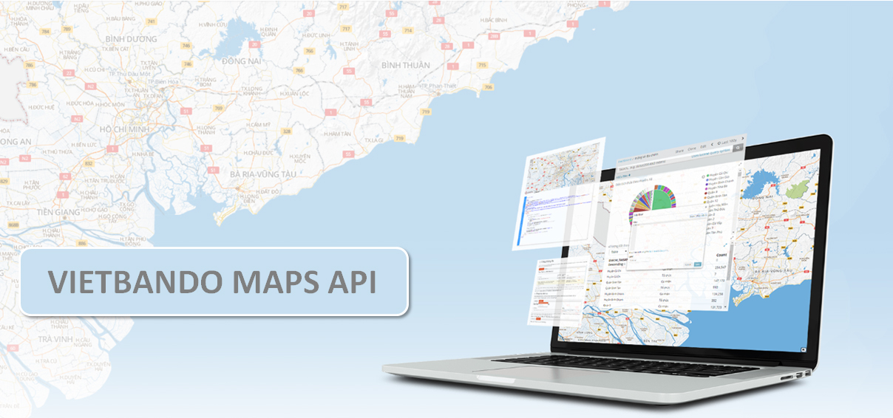

Công cụ lập trình giúp bạn tích hợp bản đồ và các chức năng tìm kiếm, tìm đường vào website và ứng dụng của bạn.
Tổng quan về Vietbando Maps API
Vietbando Maps API là một phương thức cho phép các đơn vị bên ngoài có thể sử dụng các chức năng của Vietbando Maps để xây dựng sản phẩm của mình. Vietbando Maps API được xây dựng trên các công nghệ hiện đại và mạnh mẽ, đảm bảo một hệ thống bền vững, khả năng mở rộng, tùy chỉnh linh động và bảo mật cao.

- Dữ liệu chính xác: Dữ liệu bản đồ toàn bộ Việt Nam được cập nhật liên tục toàn diện, chính xác, đáng tin cậy
- Dễ dàng sử dụng: Hệ thống API được thiết kế đơn giản, dễ sử dụng kết hợp với sự tận tụy của đội ngũ hỗ trợ kỹ thuật trực tuyến
- Hiệu quả kinh tế: Chi phí tối ưu và nhiều ưu đãi kèm theo
Dịch vụ Directions API
Cung cấp dịch vụ định tuyến chính xác, tối ưu với nhiều tùy chọn khác nhau:
- Tìm đường đi qua 2 hoặc nhiều vị trí
- Hỗ trợ đa dạng các loại phương tiện khác nhau (đi bộ, xe máy, xe hơi và xe tải)
- Hỗ trợ các tiêu chí tìm đường khác nhau (nhanh nhất, ngắn nhất)
- Kết quả trả về có thể có nhiều lộ trình
- Các hàm không gian: kiểm tra điểm nằm trong/ngoài vùng, hút điểm/tập điểm vào đường
- Hỗ trợ TSP: xác định lộ trình tối ưu qua nhiều vị trí
Dịch vụ Places API
Hỗ trợ dịch vụ tìm kiếm địa điểm (POI), địa chỉ (PA) trên toàn lãnh thổ Việt Nam theo nhiều tiêu chí:
- Tìm kiếm toàn văn (Full-text search)
- Tìm xung quanh
- Tìm theo không gian
- Tự động gợi ý (AutoSuggestSearch)
Dịch vụ Maps Javascript API
Mang thế giới thực đến với người dùng web của bạn bằng nhiều bản đồ tùy chỉnh theo ý muốn:
- Cho phép tích hợp bản đồ vào trang web sử dụng Javascript
- Hiển thị các lớp bản đồ từ các nguồn khác nhau
- Hỗ trợ đa dạng các lớp (layer), kiểu (style), điều khiển (control), sự kiện (event), marker (point, polyline, polygon)... để tùy biến theo nhu cầu riêng biệt
Dịch vụ Mobile Maps SDK
Mang thế giới thực đến với người dùng trên thiết bị di động của bạn bằng nhiều bản đồ tùy chỉnh khác nhau:
- Tích hợp bản đồ vào các thiết bị di động (hỗ trợ Android và iOS)
- SDK tự động lấy ảnh bản đồ, hiển thị lên ứng dụng và phản hồi với các thao tác của người dùng như kéo (drag), nhấp (click)…
- Hỗ trợ đa dạng các loại marker, layer, event…
Dịch vụ Geocoding API
Chuyển địa chỉ sang tọa độ và ngược lại (Geocoding, Reverse Geocoding):
- Geocoding là quá trình chuyển đổi địa chỉ (như địa chỉ đường phố) thành tọa độ địa lý (như vĩ độ và kinh độ), mà có thể sử dụng để đặt các điểm đánh dấu (marker) trên bản đồ hoặc định vị bản đồ
- Reverse Geocoding là quá trình chuyển đổi tọa độ địa lý thành địa chỉ mà con người có thể đọc được
Dịch vụ Distance Matrix API
Cung cấp ma trận trọng số hỗ trợ giải quyết các bài toán hậu cần, giao hàng nhiều địa điểm, điều phối xe taxi, hoạch định lộ trình tối ưu…
- Lấy thông tin ma trận trọng số (khoảng cách theo đường đi, thời gian) từ tập các điểm bắt đầu và kết thúc
- Dịch vụ trả về thông tin dựa trên tuyến đường được đề xuất giữa điểm bắt đầu và điểm kết thúc
Dịch vụ Static Maps API
Cung cấp bản đồ tĩnh cho website phù hợp với các trang báo cáo, liên hệ:
- Cho phép nhúng ảnh bản đồ tĩnh vào trang web mà không cần dùng đến Javascript
- Dịch vụ tạo ảnh bản đồ dựa trên các thông số (parameters) của URL thông qua HTTP request và trả về ảnh bản đồ có thể hiển thị trên web